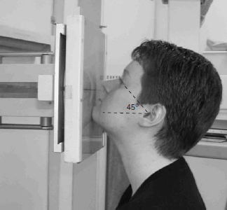

Facial(Occipito-Mental)
Centering point:Directed
Perpendicular to the cassette

Cassette Size:24cm x 30cm (12 x 10 ins)
Potrait
Exposure Factors:75kVp on
20mAs
FFD:100cm
Bucky/Grid:Moving or Stationary Grid
Filter:No
Collimation:collimate closely to the outer margins of the eye
Pathologies:Fractures (blowout, tripod, leforte) , foreign bodies, fluid levels in sinus (if performed erect), neoplastic processes
Position of patient and cassette
- The patient should be seated, facing the upright bucky
- The median sagital plane should be perpendicular to the cassette, this is done by checking the external audiatory meatuses and the outer canthi of the eyes.
- The patients mentum of the chin should be touching the upright bucky and sufficiently raised to bring the orbito-meatal baseline or radiographic baseline 45° from horizontal. Clearing the maxillary sinuses of the petrous ridge.